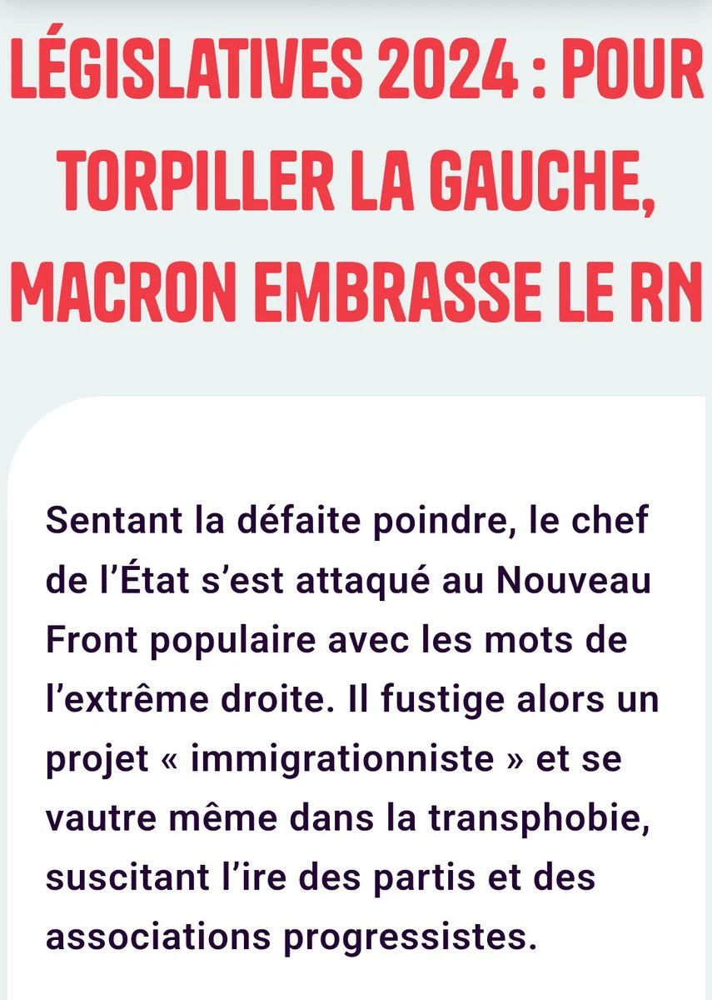

Publication sur X
Législatives 2024. Une prise de position sur Emmanuel Macron et le RN
Date de publication sur X · 19 juin 2024
Texte de la publication sur X
Macron toute honte bue 🤮.
Les 30 juin et 7 juillet votez #NouveauFrontPopulaire https://t.co/6oGwRQYeeI

Sources
PCF 79 · @79Parti sur X · AR-0005-TW-1803507108685476056
À lire aussi · Sénatoriales 2026. Le PCF 79 présente Frédéric Giraud et Valérie Mazé